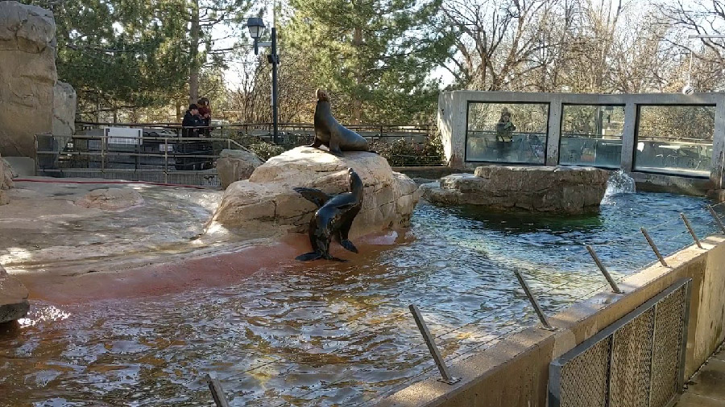

Sea Lions
Everyone knows that the best thing to get on a hot summer day is sof-serve ice cream. You head toward the sea lions because not only are they super fun to watch, but because the delicious treat that you're craving happens to be there. The sea lions are always swimming around, making noise and sometimes there's even a show. You just happened to walk up durring the middle of one of said shows, and got to see some neat tricks. The amount of flare that the sea lions exude reminds you of a certain bird. While energetic, the sea lions also love lazying around and soaking in the sun when they can. Their lazy side is similar to that of a hibernating bear.
As you finish off the remains of your ice cream, you walk to the underwater portion of the enclosure and watch the animals plunge. While there you also learn some more about this magnificent creature:
Aquatic Adaptations
The sea lion's ancient ancestors, like those of whales and dolphins, lived on land. The modern animal is well adapted to an aquatic environment, with its streamlined body and powerful flippers. (The rear flippers rotate forward to allow a California sea lion to move surprisingly well on land.) California sea lions also boast thick layers of blubber to insulate their bodies from the chill of marine waters.
When diving deep, California sea lions slow their heart rates to allow them to remain underwater for nearly ten minutes before surfacing to breathe. This ability gives them an edge in the pursuit of the fish, squid, and shellfish that make up their primary diet.
Click here to learn more about sea lions.